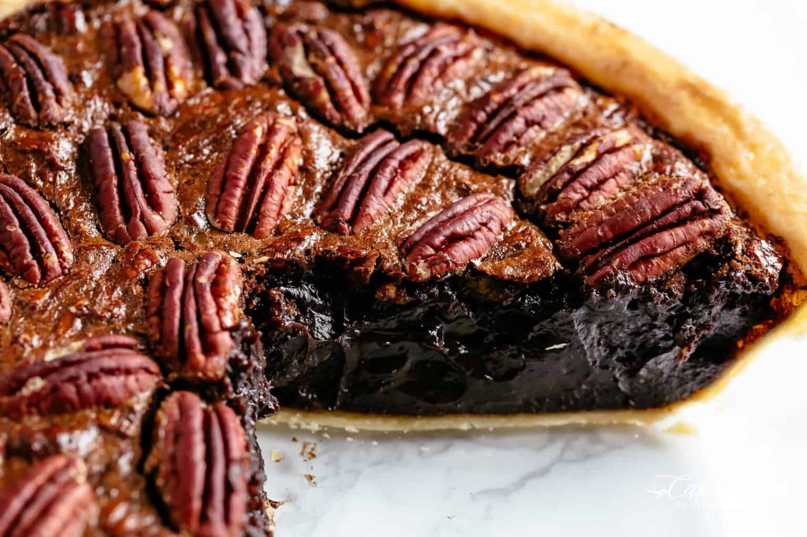

Chocolate Pecan Pie

Description
Not just any chocolate pie…. this Chocolate Pecan Pie is a cross between a pecan pie, chocolate fudge, molten brownies and a hot fudge chocolate pudding. Spiked with optional bourbon, our recipe is addictive and irresistible.
Ingredients
- 2 cups pecans
- 6 ounces 70% chocolate roughly chopped into pieces (or semisweet chocolate)
- 1/2 cup unsalted butter melted
- 2 tablespoons unsweetened cocoa powder (I use Hershey's)
- 3/4 cup golden syrup maple syrup, rice syrup or light corn syrup
- 3/4 cup light brown sugar packed
- 2 tablespoons all purpose flour
- 2 tablespoons bourbon optional
- 1 tablespoon pure vanilla extract
- 3/4 teaspoon salt
- 4 large eggs whisked
- 9 inch pie crust or pie shell
Steps
- Preheat oven 350°F (175°C) with rack on lowest position in oven. Prepare pie crust. If using uncooked pie crust, prick the base a few times with a fork to prevent air bubbles before pouring in the filling.
- When oven is hot, toast pecans on a baking sheet for 10 minutes. Roughly chop half of the toasted pecans. Reserve the other half for decorating the top of the pie.
- Fill a small pot 1/3 of the way with water and bring to a boil over medium-high heat.
- Reduce heat to low and place a heat-proof bowl on the pot. Fill the bowl with the chocolate and stir continuously until the chocolate is melted.
- Add the butter to the chocolate, stirring well to combine until butter is melted. Mix in the cocoa powder until completely dissolved.
- Take the bowl off the heat. Whisk in syrup, sugar, flour, bourbon, vanilla and salt.
- Add the eggs and whisk well to combine. Fold in chopped pecans. Pour into prepared pie shell and top with remaining pecans.
- Bake for 50-55 minutes or until centre is just set to the touch but still a little jiggly underneath. If your pie is browning too fast, loosely tent with foil.
- The pie will be puffed up as soon as it comes out of the oven, but it will deflate and flatten as it cools. Let cool on a wire rack for about 4 hours and serve warm, or refrigerate to chill overnight.